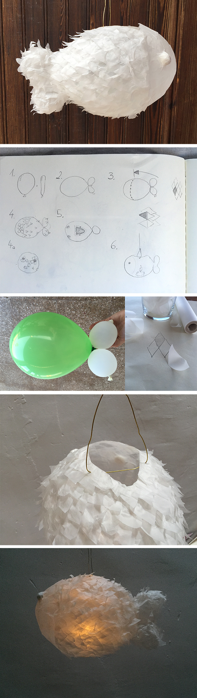
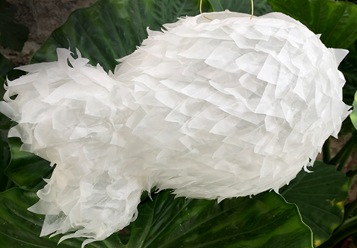

Eine Fischlaterne.
1. Man braucht einen birnenförmigen und einen länglichen Luftballon. Die bläst man auf ( ,nicht zu doll)
2. Nun macht man einen Knoten mit dem Ende des birnenförmigen um die Mitte des länglichen Luftballons
3. Man schneidet Rauten aus Transparentpapier ( am besten man legt mehrere Schichten Papier übereinander). Diese werden von der Schwanzflosse Richtung Kopf geklebt (Kleister). Den Kleber streicht man nur auf die Hälfte der Ruten, so dass diese überlappen.
4. Am Kopf angekommen klebt man die Rauten ( oder auch andere Formen) ganzflächig auf.
4a. Man kann Papierknülchen als Glubschaugen aufkleben. Damit diese halten klebt man Transparentpapier über die Kugeln.
5. Wenn der Fisch getrocknet ist schneidet man ein dreieckiges Loch in den oberen Teil und holt die Ballonreste heraus. Am besten man verstärkt den Rand mit einem Papierstreifen.
6. Man zieht einen Draht durch den Rand ( Hierbei muss man das Gleichgewicht des Fisches finden) und kann daran dann den Faden festmachen.
Mit einem elektrischen Teelicht als Lampenschirm leuchtet der dicke Ballonfisch.
( Keine echten Kerzen oder Glühbirnen verwenden die heiß werden, Transparentpapier kann leicht Feuer fangen.)
